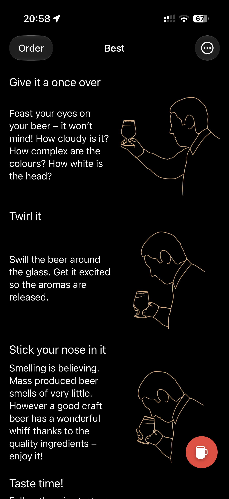
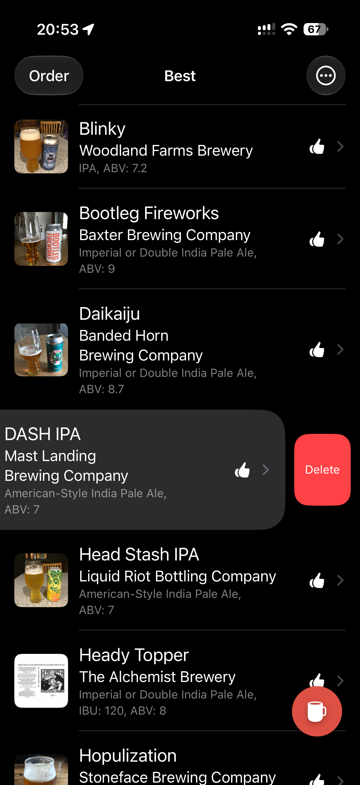
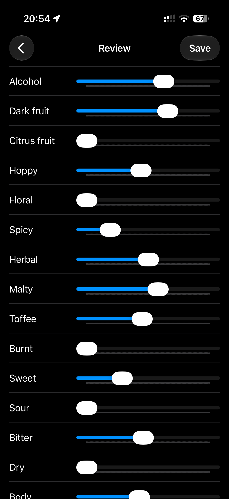
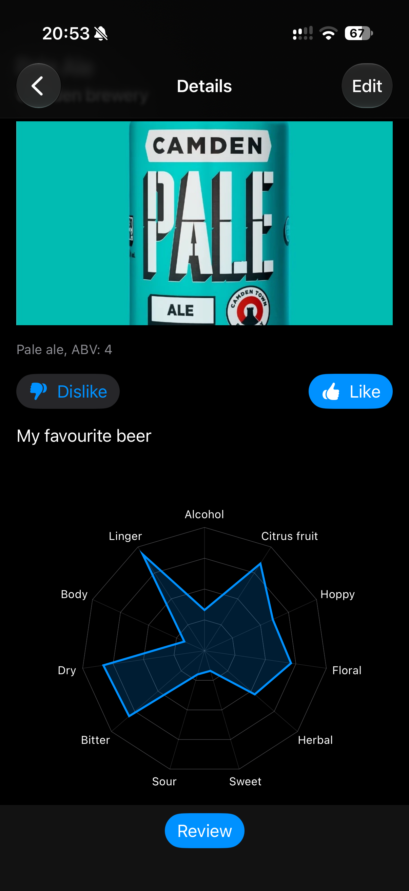

Gibl is a simple way to keep track of the beers you try and remember what you liked about them.
Record your favourite beers, add photos and tasting notes, and describe each beer using a flavour wheel – a quick, visual way to capture everything from hoppy bitterness to spicy or floral notes.
No registration. No ads. Just a clean, simple beer journal that works offline. Built so you can still use it while drunk!
Your records and photos are stored in iCloud and synced across your devices, so your beer journal comes with you when you switch to a new device. Make sure iCloud is enabled for Gibl to keep your records synced. If iCloud is unavailable, new entries are saved on your device.
Gibl does one thing: keeps your beer reviews in one place, ready for the next time you’re choosing a pint.
For iPhone and iPad. Requires iOS 18 or later. On your home screen, the app appears as Beer Notes.
Already use the App Store version? The beta doesn't import your existing beers yet, so it starts with an empty list. It leaves your old data untouched so a later release can bring it across.



